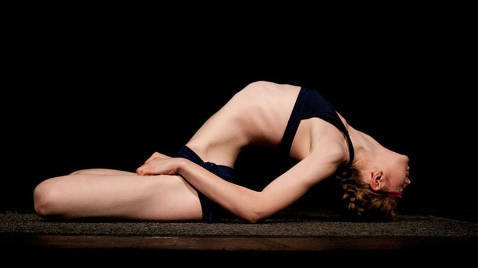

<!-- <a class="fancybox-effects" href="images/gallery/large.jpg" title=""></a> -->
<!-- ABOUT SECTION -->
<section id="FAQ">
<div class="container">
  <h1>שאלות ותשובות</h1>
  <div class="row">
    <!--1st column-->
  <div class="span12" dir="rtl">
    <div class="inner-div">
<p><span class="faq_question">האם דרוש ניסיון קודם?</span>
כל אדם מוזמן להתחיל ולתרגל יוגה,גם מי שטרם התנסה בתרגול בעבר.
לפני התרגול נערוך שיחה ובה אשמח לשמוע עליכם ועל מצבכם הגופני ,אם ישנם כאבים מהם את סובלים ,ניתוחים ,מחלות או רגישות כלשהי.
ייתכן ולאדם מסוים יתאים יותר תרגול פרטני למשך זמן מה כדי לשקם או לשמר יכולות גופניות ולחזק את הגוף בטרם יוכל להשתלב בקבוצה.
הקבוצות הנה הטרוגנית וכל אחד בה מתרגל כפי יכולתו. התרגול מתאים לכל אדם .בכל יום הגוף שלנו משתנה וכך גם התחושה ולכן יש לפעול במתינות ולגלות מה מתאפשר לכם בגבולות המאמץ הנעים.</p>

<p><span class="faq_question">האם ניתן לתרגל בזמן הריון ,טיפולי פוריות או מחלה כרונית?</span>
יש לפנות ראשית לרופא המטפל שלכם ולברר מהו הטיפול הנכון עבורכם.במידה והרופא סבור כי פעילות רכה כמו יוגה תתאים למצבכם יש לקבל את הסכמתו לכך בכתב ולהציג את האישור לפני השיעור.</p>

<p><span class="faq_question">כיצד יש להגיע אל השיעור?</span>
אל השיעור יש להגיע בלבוש נוח ומרווח,כזה שתהיו נינוחים לנוע אתו,להרים ידיים,לכפוף מטה.
מומלץ להגיע על בטן ריקה (עד שעתיים לפני) ולמעט בשתייה (בשעה שלפני).
מומלץ להימנע לפני השיעור משתיית משקאות שיש בהם רמת חומציות גבוהה כמו קפה או מיץ תפוזים.</p>

<p><span class="faq_question">האם עליי להצטייד במזרן אישי?</span>
מומלץ להצטייד במזרן אישי. במידה ואין ברשותכם ,תוכלו לשאול מזרן עבור התרגול בזמן השיעור. כדאי לעדכן מראש .</p>

<p><span class="faq_question">האם אני יכול להגיע לשיעור ניסיון?</span>
בוודאי.אשמח לארח אותך בשיעור ולאפשר לך להתנסות בתרגול ולראות אם הוא מתאים לך.
שיעור ניסיון כרוך בעלות של 50 ש"ח. במידה ותבחרו להמשיך ולתרגל ,תתבקשו להשלים רק את יתרת התשלום עבור אותו החודש.</p>

<p><span class="faq_question">במסגרת התרגול בקבוצה ,האם ניתן לשלם עבור שיעור בודד?</span>
ב"לנוע עם נועה" התשלום מתבצע מראש עבור חודש מלא.
תשלום עבור שיעור בודד מייקר את העלויות עבור המתרגל שכן ישנם חודשים בהם מגיעים לחמישה שיעורים.כמו כן ,התשלום מראש יוצר מחויבות למספר מסוים של שיעורים ותורם להתמדה ולתהליך הלמידה.לכן אין משלמים עבור שיעור בודד.</p>

<p><span class="faq_question">מה ניתן לעשות אם הפסדתי שיעור?</span>
התשלום אינו מוחזר במקרה של החסרת שיעור. יחד עם זאת, אתם מוזמנים להגיע ולהשלים את השיעור בכל אחת מן הקבוצות השונות על בסיס מקום פנוי ובתיאום מראש.</p>

<p><span class="faq_question">במידה ואני מעוניין להפסיק לתרגל,מה עליי לעשות?</span>
החיים שלנו דינמיים ומשתנים, לכן חשובה לנו היציבות שבתרגול. יחד עם זאת,בכל שלב שבו אתם חווים שהתרגול לא מתאים עבורכם ,תרגישו חופשיים ללכת.תמיד תוכלו לשוב,כל אימת שתחפצו ותתקבלו בברכה.
עדכנו אותי בבחירה ותקבלו החזר של התשלום באופן יחסי לפי מספר השיעורים שנכחתם בהם באותו החודש.</p>

<p><span class="faq_question">לשם מה מוסרים כתובת דוא"ל?</span>
הכתובת משמשת לשליחת דיוור אלקטרוני ועדכונים חשובים לתלמידים. במידה ואינם מעוניינים לקבל דיוור ציינו זאת בעת ההרשמה או בכל שלב במהלך לימודיכם.
כתובת הדואר האלקטרוני שלכם נותרת חסויה ואינה מועברת הלאה לגורם אחר.</p>
    </div>
  </div>
</div>
</section>
<!-- END ABOUT -->
